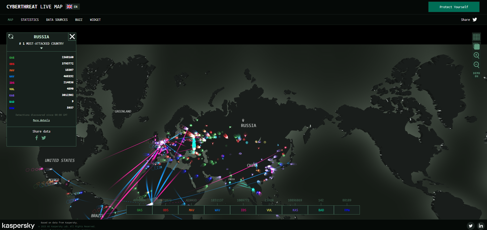

WEEK 1 – CLASS 3
PRACTICAL SESSION – CYBER ATTACK EXPERIENCES
⭐ CLASS 3:
We are looking at real hackers, real attacks, real threats, happening live all over the world. This class features 4 powerful practical labs designed to build your cybersecurity confidence.
This is the moment you finally see what cyber attacks look like in real life. Every line on the map is a real hack attempt happening that second.

Attack maps show:
Observation Steps (5 Minutes Minimum):
Your goal here is not to memorize—your goal is to feel the scale of global cybercrime.
Within 5 minutes, you will clearly see: constant attacks, nonstop scanning, and automated robots attacking everything.
A brute-force attack is when an attacker tries many passwords very fast, hoping to guess the right one.
Millions of automated brute-force attacks are happening right now on:
Go to any threat map and look specifically for terms like:
SSH brute-force login attempts | RDP login attempts | Web login brute-force
You will notice that these automated attacks never stop, come from many countries, and target random servers constantly.
After doing this lab, you will NEVER use a weak password again.
Phishing is the #1 attack vector used to steal passwords, OTPs, money, and bank accounts.
⭐ What You Will Do: Search online for “real phishing website examples” and compare 2–3 sample pages with the real, legitimate websites.
Examples: facebo0k-security-help.com or paypall-update.net. If the domain looks unfamiliar or has typos, it is fake.
Phishing always creates fear: "Your account will be deleted in 1 hour!" or "Payment failed — update immediately!" Fear is their weapon.
Cybersecurity is not just tools—it is habits. Your goal: Build a daily routine that protects you every single day. A simple checklist that you follow without thinking.
Submit before next class.
Submission Tasks:
END OF CLASS 3